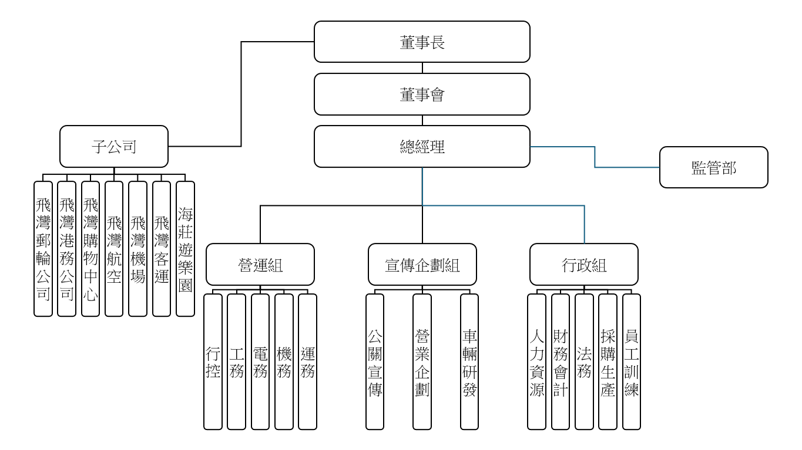
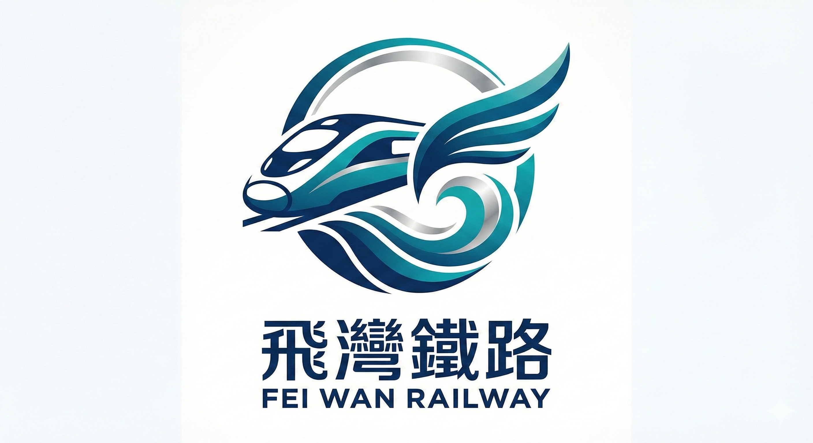
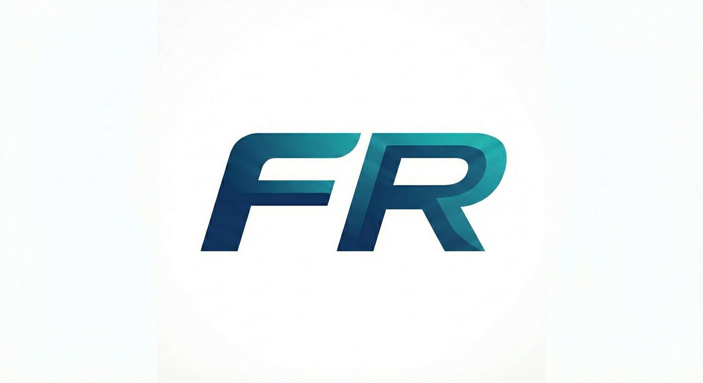

公司組織架構

本公司設有完善的決策與執行體系。由董事會與總經理領軍，下轄營運、宣傳企劃及行政三大核心組別，並由獨立的「監管部」負責內控。此外，我們透過多元的子公司發展郵輪、港務、航空及遊樂園等業務，打造全方位的交通生活圈。
飛灣鐵路公司是本世界線的主要鐵道營運者，負責建設與管理飛灣地區的鐵道網路。
我們致力於提供安全、準時且舒適的旅運服務，並透過鐵路串聯各式生活場景與觀光資源。

主標誌由「飛翼、海浪、流線型列車」三大元素構成，圓形外框象徵飛灣生活圈的圓滿與連結。翼狀線條呼應「飛」字，傳達高速與跨越地理限制的願景；底部水流紋路則代表「灣」區地理特色與永續流動的生命力。

以「FR」(Flywan Railway) 字母縮寫為核心，採斜體設計強調速度感，主要用於車輛塗裝、票券及行動裝置 App，展現現代簡約的品牌形象。
飛灣鐵路公司以「讓每一趟旅程，都成為環境與日常生活的一部分」為核心職責。面對未來挑戰，我們將 ESG 理念深度融入營運策略，致力於達成以下目標：
積極響應《全京綠色計畫》，研發低耗能車輛並優化路網效率，減少碳足跡。落實《海岸景觀復育法》，讓鐵道建設與自然生態和諧共生。
以「穩定、安全、貼近生活」為守則，提供無障礙且高品質的通勤與觀光服務，強化社區連結，成為飛灣居民最信賴的生活載體。
建立完善的監督與管理體系，透過「監管部」獨立職能落實誠信經營，確保營運穩定性與決策透明化，以達成企業長期永續發展。

本公司設有完善的決策與執行體系。由董事會與總經理領軍，下轄營運、宣傳企劃及行政三大核心組別，並由獨立的「監管部」負責內控。此外，我們透過多元的子公司發展郵輪、港務、航空及遊樂園等業務，打造全方位的交通生活圈。